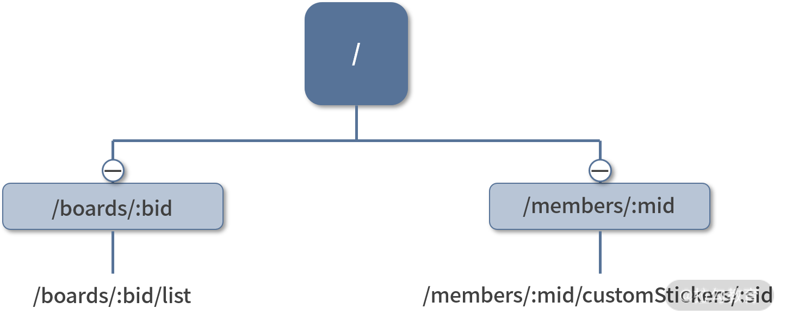
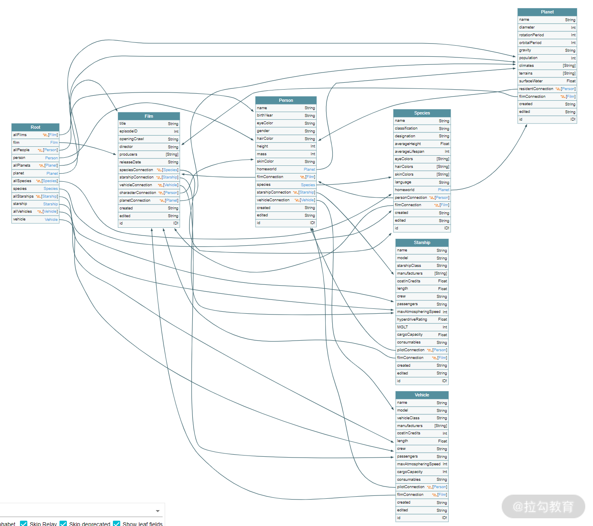
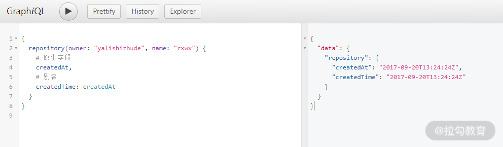
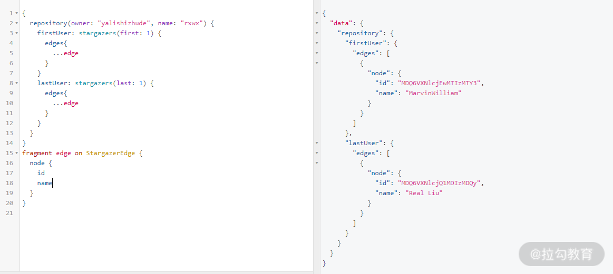
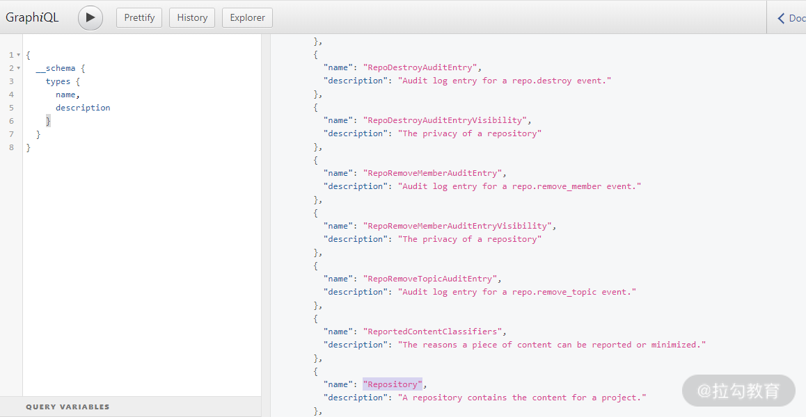
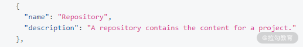
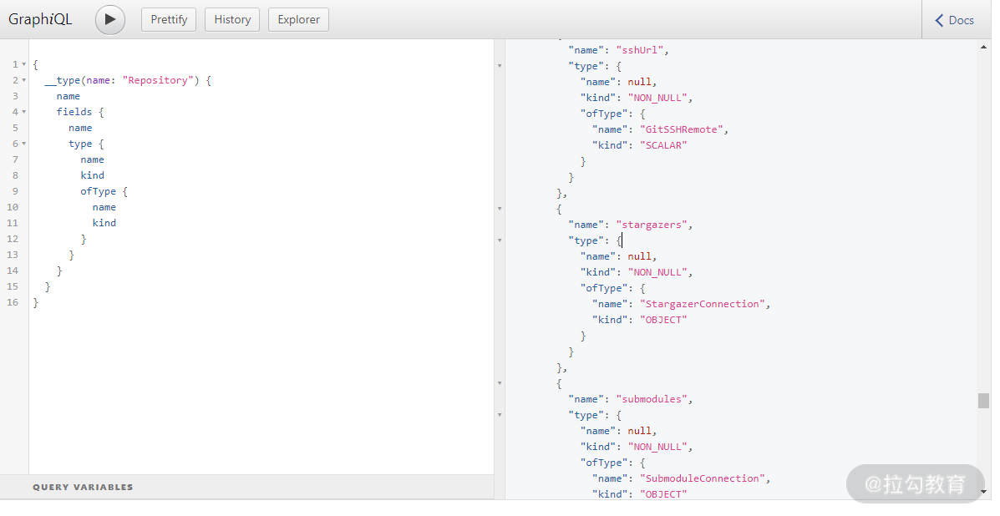
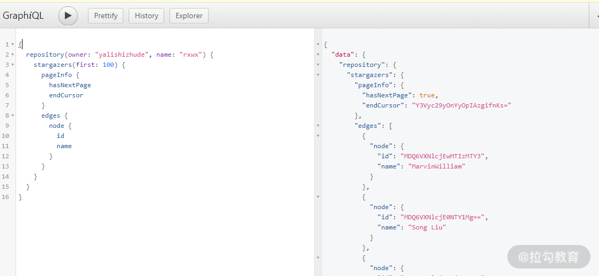

假设有下面的 GET 请求，返回结果是用户列表数据。
1 | GET https://lagou.com/a |
对于浏览器而言，可以通过头部字段 Content-Type 轻松判断出来，然后进行对应的逻辑处理。但对于工程师而言是不可读的，不知道 /a 代表什么。
解决这个问题的方法就是制定一种规范，让请求具有语义化，这种规范就是我们常说的 API 设计规范。下面就来介绍前后端通信中出现过的 3 种 API 规范。
RPC—远程过程调用
RPC（Remote Procedure Call，远程过程调用）常用于后端服务进程之间的通信。“远程”指的是不同服务器上的进程，“过程调用”里的“过程”可以理解为“函数”，这种接口设计和函数命名很相似，名称为动宾结构短语，类似下面的样子。
1 | GET /getUsers |
可能有的前端工程师对 RPC 比较陌生，但在 Web 开发早期，编写页面逻辑的工作由后端（或全栈）工程师完成，自然而然的，RPC 风格就被移植到了前后端通信中。
从接口命名上不难看出，RPC 风格和我们平常编写模块的思路很像，提供了一个函数作为接口，供其他模块调用。这明显是站在后端工程师的视角而设置的：为了像在本地调用一个函数那样调用远程的代码。
RPC 这种设计规范对前端工程师而言是不够友好的，具体表现在以下 2 个方面。
- 紧耦合：当前端工程师需要获取或修改某个数据时，他有可能需要先调用接口 A ，再调用接口 B，这种调用需要对系统非常熟悉，让前端工程师熟悉后端逻辑和代码显然是难以办到的。
- 冗余：把执行动作写在 URL 上实际是冗余的，因为 HTTP 的 Method 头部可以表示不同的动作行为。
REST—表现层状态转换
REST（Representational State Transfer），即表现层状态转换 。
什么是“表现层”？
在理解“表现层”之前，我们先理解另一个概念“资源”。资源指的是一个实体信息，一个文本文件、一段 JSON 数据都可以称为资源。
而一个资源可以有不同的呈现形式，比如一份数据可以是 XML 格式，也可以是 JSON 格式，这种呈现形式叫作“表现层（Representation）”。
什么又是“状态转移”？
当用户通过浏览器访问网站时，通常会涉及状态的变化，比如登录。
HTTP 本身是无状态的，因此，如果客户端想要操作服务器，则必须通过某种手段让服务器发生“状态转移（State Transfer）”。而这种转移是建立在表现层之上的，即“表现层状态转移”。
REST 的核心要点有两个，那就是资源和方法。
REST 的 URL 指向某个或某类资源，所以不再是类似 RPC 的动宾结构，而是名词。比如像下面这些都是 REST 的设计风格，通常，当 URL 的路径以 ID 结尾则表示指代某个资源，无 ID 则指向一类资源。路径分隔符表示资源之间的嵌套关系。
1 | /orgs |
所以像下面这些 URL 是不符合 REST 规范的。
1 | /createUser |
而要进行状态转移的时候，使用的是 HTTP 默认的语义化头部 Method 字段。
1 | GET（SELECT）：获取资源 |
虽然 REST 的低耦合、高度语义化的设计风格比较适合前后端通信，但也存在 3 个不足，具体如下。
- 弱约束。REST 定义请求路径和方法，但对非常重要的请求体和响应体并没有给出规范和约束。这就意味着需要借助工具来重新定义和校验这些内容，而不同工具之间的定义格式和校验方式都不相同，给工程师带来了一定的学习负担。
- 接口松散。 REST 风格的数据粒度一般都非常小，前端要进行复杂查询的时候可能会涉及多个 API 查询，那么会产生多个网络请求，很容易造成性能问题。通常的解决方案是通过类似 API 网关的中转服务器来实现对接口的聚合和缓存。
- 数据冗余。前端对网络请求性能是比较敏感的，所以传输的数据量尽可能小，但 REST API 在设计好之后，返回的字段值是固定的。所以很容易出现这样一个场景，对于后端工程师而言，为了减少代码修改，会尽可能地在返回结果中添加更多的字段；对于前端工程师而言，使用数据的场景往往是多变的，即使是调用同一个 API，在不同场景下也只会用到某些特定的字段。所以不可避免地产生数据冗余，从而造成带宽浪费，影响用户体验。
如果要改进上述不足，该怎样定义 API 规范呢？
GraphQL—图表查询语言
我们再次将关注点从资源转移到 API 的调用者上，从调用者的角度来思考 API 设计。对于调用者而言，最关心的不是资源和方法，而是响应内容。在前后端的交互中，请求体和响应内容一般都采用 JSON 格式。下面是 GitHub REST API 的响应内容示例，由于响应内容字段太多，只截取了部分字段。
1 | { |
假设上面的响应内容是前端所需要的内容，现在来思考一个问题，该如何告诉后端所期望得到的数据结构呢？
如果只考虑对 JSON 数据的描述，其实已经有现成的规范来实现了，即用 JSON-Schema 来描述上面的 JSON 数据，代码如下：
1 | { |
可以看到，描述信息本身大小已经超过了数据内容，所以这种烦琐的描述方式显然不适用于前后端通信，因为会占据较多的带宽。
既然不能做加法，那么就尝试做减法。对于 JSON 数据而言，重要的是描述其结构，值是可变的，所以可以把值去除。上述示例数据会变成下面的结构。
1 | { |
在进行结构描述的时候，我们关注的是字段名称和层级关系，所以还有进一步的优化空间，那就是去掉一些不必要的符号，变成下面的形式。
1 | { |
然而这个结构已经是最基础的 GraphQL 查询语句了，当然 GraphQL 并不止如此，还有更多的高级功能，比如参数变量、片段。下面就来介绍一下 GraphQL。
GraphQL（Graph Query Language） 是图表查询语言，在 REST 规范中，请求路径表示资源之间的嵌套关系，那么很容易形成树型结构，如下图所示。

REST 风格的树结构 API
GraphQL 中不同类型之间的关联关系通过图来表示。下面是一张通过 GraphQL 工具生成的示例图，描述了不同类型之间的关系。

GraphQL Voyager 示例图
虽然 GraphQL 的设计理念和 REST 有较大差别，而且还上升到了“语言”层面，但核心概念其实就两个：查询语句和模式，分别对应 API 的调用者和提供者。
GraphQL 的查询语句提供了 3 种操作：查询（Query）、变更（Mutation）和订阅（Subscription）。查询是最常用的操作，变更操作次之，订阅操作则使用场景就比较少了。
下面重点介绍一下查询操作中 3 个常用的高级功能。
别名（Aliases）
别名看上去是一个锦上添花的功能，但在开发中也会起到非常重要的作用。考虑一个场景，前端通过请求 GET /user/:uid 获取一个关于用户信息的 JSON 对象，并使用了返回结果中的 name 字段。如果后端调整了接口数据，将 name 字段改成了 username，那么对于前端来说只能被动地修改代码；而如果使用 GraphQL，只需要修改查询的别名即可。
下面是一个使用别名将 GitHub GraphQL API 的 createdAt 改为 createdTime 的代码示例。

片段（Fragments）
如果我们在查询中有重复的数据结构，可以通过片段来对它们进行抽象。下面是一个使用 GitHub GraphQL API 来查询当前仓库第一位 star 用户和最后一位 star 用户的例子。将 StargazerEdge 类型的部分字段抽取成了 Fragment，然后在查询中通过扩展符“…”来使用。

内省（Introspection）
调用 REST API 非常依赖文档，但 GraphQL 则不需要，因为它提供了一个内省系统来描述后端定义的类型。比如我要通过 GitHub GraphQL API 来查询某个仓库的 star 数量，可以先通过查询 schema 字段来向 GraphQL 询问哪些类型是可用的。因为每个查询的根类型总是有 schema 字段的。

__schema 查询根类型
通过搜索和查看描述信息 description 字段可以发现，其提供了一个 Repository 类型。

在返回的模式中找到 “Repository” 类型定义
然后再通过 __type 来查看 Repository 类型的字段，找到和 star 有关的 stargazers 字段描述，发现这个字段属于 StargazerConnection 类型，以此类推继续查找，后面的嵌套子类型查找过程就不一一截图了。

通过 __type 查找 Repository 类型字段
最终通过下面的查询语句获得了第一页的查询结果。

查询 Repository 的前100 个关注者
后端的模式与 Mongoose 及 JSON-Schema 的模式有些类似，都是通过声明数据类型来定义数据结构的。数据类型又可以分为默认的标量类型，如 Int、String 及自定义的对象类型。下面是一个类型声明的例子：
1 | type User{ |
这段代码定义了一个 User 类型，包含 3 个字段：ID 类型的 id 字段，String 类型的 name 字段以及 Book 类型列表 的 books 字段。其中 ID 和 String 为标量类型，Book 为对象类型，惊叹号表示字段值不能为 null。
GraphQL 的类型声明和 TypeScript 的类型定义除了在写法上有些类似，在一些高级功能上也有异曲同工之处，比如联合类型和接口定义。
1 | union Owner = User | Organization |
定义好模式之后，就要实现数据操作了。在 GraphQL 中这一部分逻辑称为解析器（Resolver），解析器与类型相对应，下面是类型定义以及对应的解析器。
1 | const schemaStr = ` |
总体而言，GraphQL 在弥补 REST 不足的同时也有所增强，表现在：
- 高聚合。GraphQL 提倡将系统所有请求路径都聚合在一起形成一个统一的地址，并使用 POST 方法来提交查询语句，比如 GitHub 使用的请求地址就是：https://api.github.com/graphql。
- 无冗余。后端会根据查询语句来返回值，不会出现冗余字段。
- 类型校验。由于有模式的存在，可以轻松实现对响应结果及查询语句进行校验。
- 代码即文档。内省功能可以直接查询模式，无须查询文档也可以通过命名及描述信息来进行查询。
对于前端而言，GraphQL 提供了一种基于特定语言的查询模式，让前端可以随心所欲地获得想要的数据类型，是相当友好的；而对于后端而言，把数据的查询结果编写成 REST API 还是 GraphQL 的解析器，工作量相差不大，最大的问题是带来的收益可能无法抵消学习和改造成本。这在很大程度上增加了 GraphQL 的推广难度。
所以 GraphQL 的大多数实际使用场景分为两类，一类是前端工程师主导的新项目，后端采用 Node.js 来实现，用 GraphQL 来替代 REST；另一类就是将 Node.js 服务器作为中转服务器，为前端提供一个 GraphQL 查询，但实际上仍然是调用后端的 REST API 来获取数据。
总结
从 RPC 到 REST 再到 GraphQL，可以看到 API 规范上的一些明显变化。
- 关注点发生了明显的转移。从 API 的提供者，到 API 数据，再到 API 的使用者。
- 语义化的特性更加明显。从最初通过路径命名的方式，到利用 HTTP 头部字段 Method，再到直接定义新的查询语言。
- 带来的副作用，约束更多，实现起来更加复杂。
站在前端工程师的角度再来看这些 API 规范，对于 RPC 风格，了解即可；对于 REST API，需要重点理解它通过路径指向资源，以及利用 HTTP 方法来指代动作的特性；对于 GraphQL，应该从 API 调用者和 API 提供者两个角度来分别学习查询语句和模式。
最后布置一道思考题：在谈到 REST 规范时，提到一个反例“/samples/export”，你还能找到常见的不符合 REST 规范的例子吗？
Tips: Please indicate the source and original author when reprinting or quoting this article.